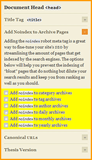

This is a followup response to Everfluxx, who wrote a post about the robots meta tags that Thesis inserts into archive pages.

Everfluxx discovered that when you opt to add the noindex attribute to your pages’ robots meta tags, Thesis automatically assumes you meant noindex, nofollow. However, the nofollow attribute can cause a loss of site-wide PageRank, so many Thesis users will probably need a way to remove it.
For a complete explanation, check out this must-read post from Everfluxx:
Using Thesis? Then beware of the “hidden” nofollow on archive pages!
In his post, Everfluxx describes the problem and proposes a solution. His solution is quick and easy, but it requires editing Thesis core files, which makes some bloggers nervous (since they would have to redo that code edit every time a new version of Thesis is released). In his closing paragraph, Everfluxx writes:
A final word to fellow Thesis developers/hackers: if you can think of a Better Way To Do It that does not require editing the theme files (e.g., via WP hooks, I dunno), please drop it in the comments. Thanks
I was in the mood for some php coding, so I set to work and made it happen. But…it was just too beautiful to leave as a comment…so I kept it all to myself! (Sorry, Everfluxx! If it’s any consolation, I’ve used hot pink throughout this post…in your honor! =P)
How to Customize Your Robots Meta Tags in Thesis
- UN-check the boxes under Add Noindex to Archive Pages in the Thesis Options menu. (The code below will add the robots meta tag for you, so if you leave the Thesis options checked…you’ll end up with 2 robots meta tags on each page.)
- Copy the code below and paste it into your
custom_functions.phpfile. - Edit the robots meta tag that corresponds with each page type to suit your specific needs. I have included a variety of page types already, but feel free to delete the ones you don’t need. For more-advanced customizations, reference the WordPress conditional tags.
- Promote this post for me by clicking the social media widgets below.
// Define your motherfuckin' meta robots tags
function my_mofo_meta_robo() {
if (is_home())
$mofo_robo = "<meta name=\"robots\" content=\"index, follow\" />\n"; // HOME PAGE
elseif (is_single())
$mofo_robo = "<meta name=\"robots\" content=\"index, follow\" />\n"; // SINGLE BLOG POSTS
elseif (is_page())
$mofo_robo = "<meta name=\"robots\" content=\"index, follow\" />\n"; // PAGES
elseif (is_category())
$mofo_robo = "<meta name=\"robots\" content=\"index, follow\" />\n"; // CATEGORY ARCHIVES
elseif (is_tag())
$mofo_robo = "<meta name=\"robots\" content=\"noindex, follow\" />\n"; // TAG ARCHIVES
elseif (is_author())
$mofo_robo = "<meta name=\"robots\" content=\"noindex, follow\" />\n"; // AUTHOR ARCHIVES
elseif (is_date())
$mofo_robo = "<meta name=\"robots\" content=\"noindex, follow\" />\n"; // DATE ARCHIVES
elseif (is_search())
$mofo_robo = "<meta name=\"robots\" content=\"noindex, follow\" />\n"; // SEARCH PAGES
elseif (is_404())
$mofo_robo = "<meta name=\"robots\" content=\"noindex, follow\" />\n"; // 404 ERROR PAGE
echo $mofo_robo;
}
// Add your motherfuckin' meta robots tag to the <head> section
add_action('wp_head', 'my_mofo_meta_robo');